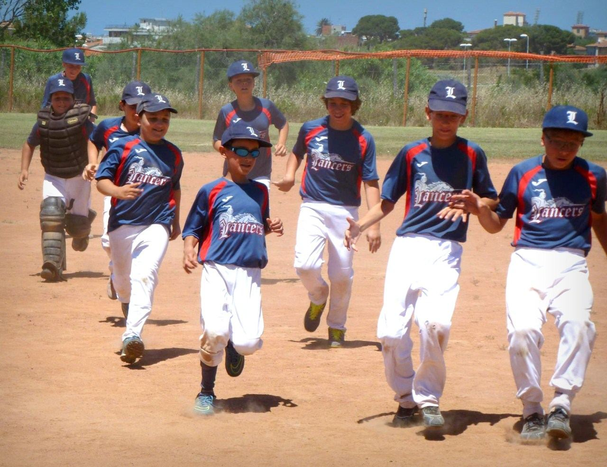
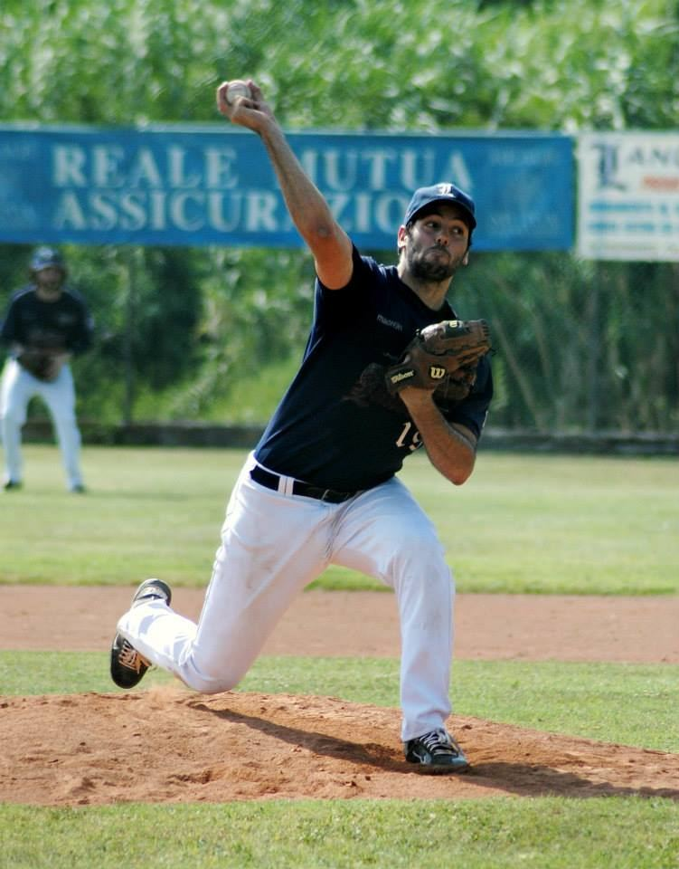
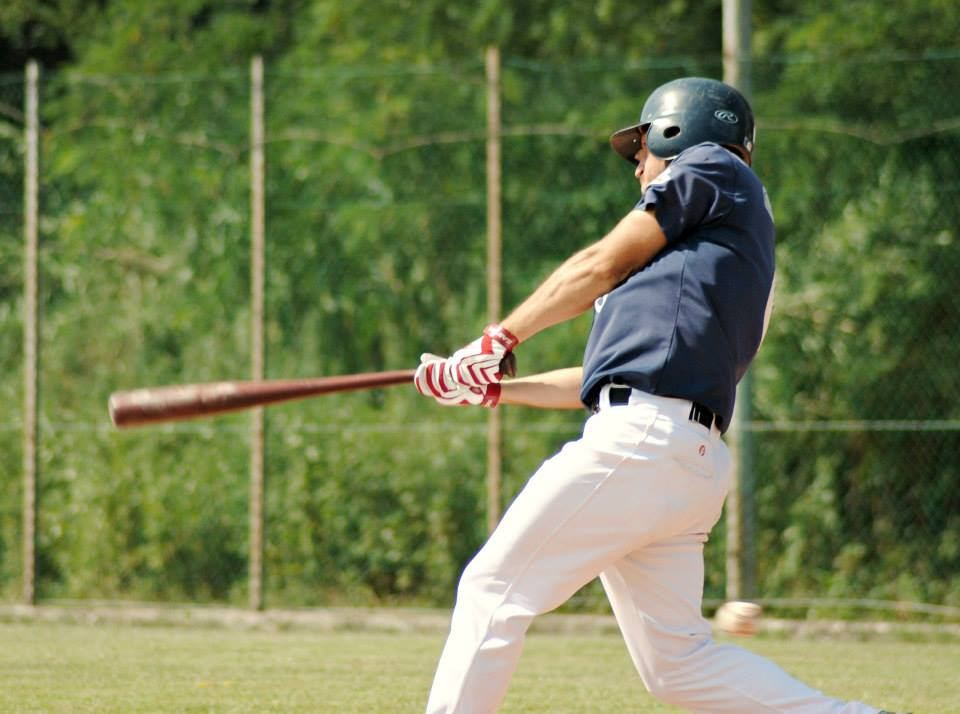

Quello appena trascorso è sicuramente un fine settimana che resterà vivo nel ricordo degli atleti, degli allenatori ma anche di tutto lo staff societario dei Lancers Baseball.
Infatti la società lastrigiana questo week end è scesa in campo con tutte e tre le formazioni che partecipano ai vari campionati giovanili e senior vincendo tutti gli incontri disputati!
Probabilmente tale evento è capitato anche lo scorso anno quando la prima squadra partecipava al campionato di Serie C, ma non era mai successo quest’anno in quanto i ragazzi allenati da Gentilini e Ciappi hanno messo a segno la prima doppietta in Serie B, oltretutto in trasferta contro una formazione di buon livello come l’Olmedo!
Andiamo per ordine.
Sabato pomeriggio gli Allievi ospitavano la formazione di Massa, la partita come da pronostico si è dimostrata avvincente e tirata sin dai primi lanci.
Le difese di entrambe le squadre, come i lanciatori, hanno svolto egregiamente il loro compito mantenendo equilibrio sino alla fine.

Solo all’ultimo attacco i Lancieri, guidati da Zalonici per l’occasione, hanno messo la freccia segnando il punto della vittoria su un errore difensivo degli ospiti, 7-6 per noi!
Bravi tutti i giovani Lancers che, nonostante il caldo, hanno resistito fino alla vittoria finale, un plauso particolare al lanciatore Scarpulla Leonardo che ha vinto la fatica pur di restare sul monte!
La trasferta di domenica mattina dei Lancierini categoria Ragazzi li ha visti opposti a una formazione labronica molto giovane e particolarmente corta.
Nonostante anche noi non fossimo in gran numero abbiamo saputo sfruttare le imprecisioni avversarie sul monte, infatti tante basi su ball e appena 3 valide.
Il partente Paoli ed il rilievo Lopez hanno imbrigliato le mazze inesperte del Livorno portando alla vittoria la propria squadra per 7 a 22; in fase offensive si è ben comportato Pellegrini “Bum Bum Sic” Alessio che ha segnato 4 punti.
La formazione di Serie B dei Lancers è tornata dalla Sardegna a bottino pieno, diverse battute valid, ottime giocate difensive e un solido monte di lancio hanno reso il tutto possibile.
In gara 1 ancora un monumentale Vannini tiene per 8.1 riprese, la partita resta in parità 5-5 fino al settimo e ottavo attacco nei quali segniamo 6 punti.
Ma l’Olmedo è una squadra che non si arrende e colpisce duro gli ultimi lanci di Vannini producendo punti, subentra Pistol che chiude la gara con due strike out. Risultato finale 9-11 Lancers.
In attacco si sono fatti sentire Parrini (4 H), Ramirez (3 H), Baratella e Degl’Innocenti (2 H ciascuno).
Gara 2 viene affidata a Baratella che tiene a freno le difficili mazze sarde per 7.2 inning nonostante qualche sbavatura in fase difensiva.
I lastrigiani mettono una seria ipoteca sulla partita al secondo attacco che porta ben 9 punti frutto di 6 battute valide e alcune basi ball.

Sul punteggio di 2 a 10 l’Olmedo sfrutta un calo di Baratella alla quinta ripresa e segna tre volte, altri due segnature arrivano al settimo.
All’ottavo Apata rileva il compagno, il parziale è sul 7-13, e chiude indenne con due uomini in base.
Come gara 1, anche in questa partita gli isolani tornano a farsi sentire al nono a suon di valide e segnano 4 punti che fanno impensierire la panchina bianco/blu.
Apata, con la freddezza di un veterano, trova lo strikeout decisivo sul battitore che rappresentava il pareggio dell’Olmedo, i Lancers possono adesso festeggiare un traguardo importante che ci consente di fare un bel salto in classifica.
In battuta grande partita di Geri con un 4/4 di cui 2 doppi, Becattini, Parrini e Diaz chiudono 2 hit ciascuno.